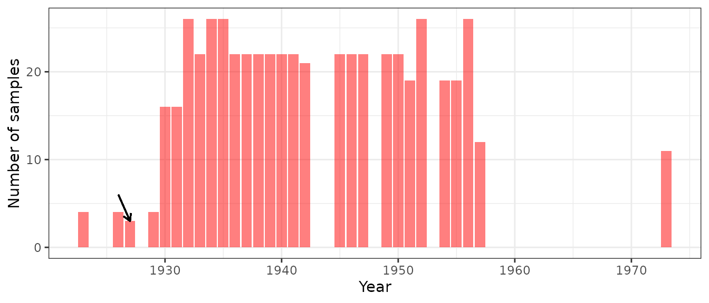
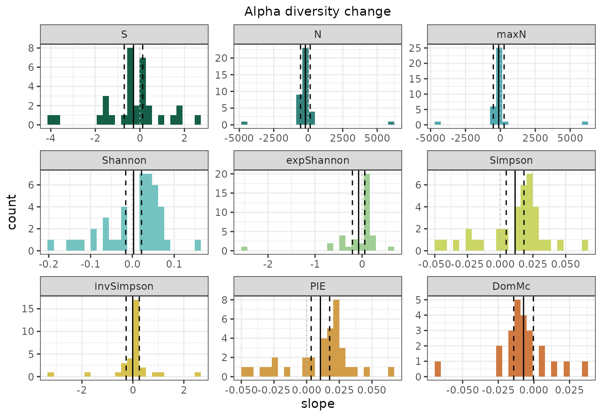
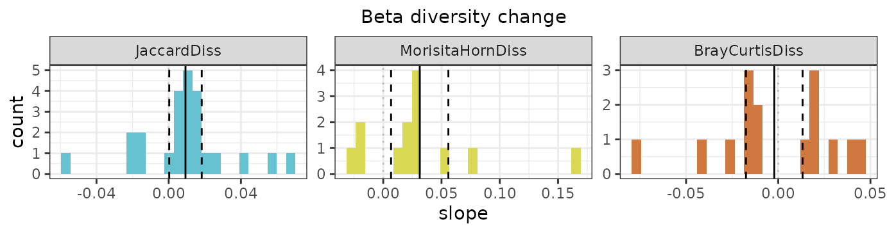
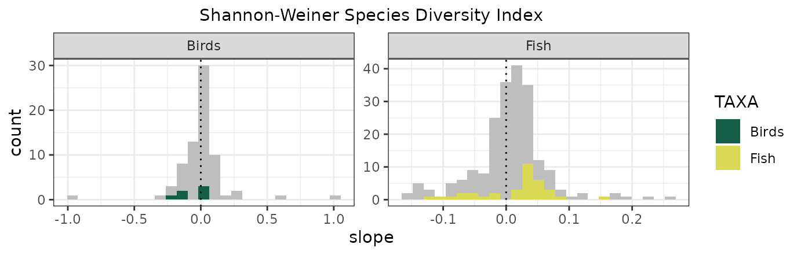
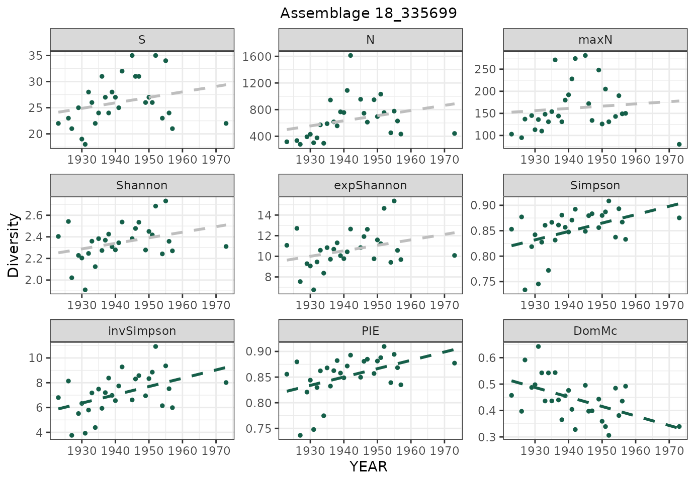

The BioTIMEr package provides tools designed to interact
with the BioTIME database. The functions provided include the BioTIME
recommended methods for preparing (gridding and rarefaction) time-series
data, a selection of standard biodiversity metrics (including species
richness, numerical abundance and exponential Shannon) alongside
examples on how to display change over time. This vignette will lead you
through an example from start to end.
Preliminaries
When loading the BioTIMEr package, a subset of BioTIME data is automatically loaded too together with its metadata. The whole BioTIME database is accessible here
# you can run the following commands to retrieve more information about the subsets.
?subBTmeta
?subBTquery
# you can also see a full list of BioTIMEr functions and help pages by:
??BioTIMErHow to use it?
- Grid BioTIME data into a discrete global grid based on location (latitude/longitude) using:
- Apply sample-based rarefaction to standardize the number of samples per year within a cell-level time series with:
- Calculate a set of standard alpha/beta diversity metrics using:
- Fits linear regression models to step 3 outputs for use in plotting with:
- Visualize some results
What follows is a detailed run through these different steps, breaking down some of the tasks and our reasoning behind our suggestions.
Note that throughout this vignette we will use the so-called ‘pipe’
operator (%>%) which allows us to connect multiple
functions in order to make our code more efficient and streamlined, we
will also use ggplot2 library for most of our visualizations. This and
other libraries required for BioTIMEr to run will be, if needed,
installed by R at the same time BioTIMEr is installed.*
Why bother with separating observations into cells?
Typically, a BioTIME study contains distinct samples measured in a
successive order (with a consistent methodology) for a given period of
time. However the spatial distribution among samples can vary
substantially depending on the nature and taxonomic resolution of the
study (e.g. forest quadrants, bird transects, fish tows, etc.). Because
the spatial extent varies among studies, a advisable step is to grid
those studies that have large extents and multiple sites into smaller
more appropriate subsets. The gridding() function is design
to perform such task using a global grid of hexagonal cells derived from
dggridR (see vignette(‘dggridR’)).
Let’s apply it to a subset of BioTIME data and see what happens:
grid_samples<-gridding(meta = subBTmeta, btf = subBTquery, res = 12, resByData = FALSE)
# Get a look at the output
# grid_samples %>% head() %>% kable()You can see that each sample is assigned a different combination of study ID and grid cell (based on its latitude and longitude) resulting in a unique identifier which determines our assemblage time series (assemblageID). Let’s take a look and see how many studies/cells/assemblages time series are there:
check1 <- grid_samples %>%
group_by(StudyMethod, STUDY_ID) %>%
summarise(n_cell = n_distinct(cell), n_aID = n_distinct(assemblageID), res="res12")
check1 %>% head(10) %>% kable()| StudyMethod | STUDY_ID | n_cell | n_aID | res |
|---|---|---|---|---|
| ML | 211 | 12 | 12 | res12 |
| ML | 372 | 85 | 85 | res12 |
| ML | 402 | 3 | 3 | res12 |
| ML | 431 | 456 | 456 | res12 |
| ML | 437 | 10 | 10 | res12 |
| ML | 466 | 250 | 250 | res12 |
| SL | 10 | 1 | 1 | res12 |
| SL | 18 | 1 | 1 | res12 |
| SL | 41 | 1 | 1 | res12 |
| SL | 53 | 1 | 1 | res12 |
# How spread out were samples in a given study?
ggplot(data = check1) +
geom_bar(mapping = aes(x = as.character(STUDY_ID), y = n_aID, fill = res ,),
stat = "identity") +
scale_fill_discrete(type = c("#155f49")) +
xlab("StudyID") + ylab("Number of assemblages in a study") +
theme_bw() You can see that several studies are not partitioned, and that’s because
all their observations were already contained within a single cell.
You can see that several studies are not partitioned, and that’s because
all their observations were already contained within a single cell.
What happens if I change res?
By default the function separates studies into hexagonal cells of ~96
km2 (res=12), as this resolution was found to be the most
appropriate value when working on the whole BioTIME database. Yet
sometimes, particularly when working with a subset of BioTIME, you may
want to explore alternative grid resolutions. The function gives you 2
options: you can either directly define a new resolution or allow the
function to find the best res based on the average study
extent of your dataset. Let’s run over these alternative options with a
few examples:
# define a alternative resolution of 14 (~10.7 km2 cells)
grid_samples_14<-gridding(meta = subBTmeta, btf = subBTquery, res = 14, resByData = FALSE)
# allow the spatial extent of the data to define the resolution
grid_samples_auto<-gridding(meta = subBTmeta, btf = subBTquery, res = 12, resByData = TRUE)
# this option also returns a message with the automatically picked resolution:## Resolution: 15, Area (km^2): 3.55473501726709, Spacing (km): 1.86210705534755, CLS (km): 2.12744663988395So what changed with res?
check2 <- grid_samples_14 %>%
group_by(StudyMethod, STUDY_ID) %>%
summarise(n_cell = n_distinct(cell), n_aID = n_distinct(assemblageID), res = "res14")
check3 <- grid_samples_auto %>%
group_by(StudyMethod, STUDY_ID) %>%
summarise(n_cell = n_distinct(cell), n_aID = n_distinct(assemblageID), res = "res15")
checks <- rbind(check1, check2, check3)
ggplot(data = checks) +
geom_bar(mapping = aes(x = as.character(STUDY_ID), y = n_aID, fill = res),
stat = "identity", position = "dodge") +
scale_fill_discrete(type = c("#155f49","#66c1d1","#d9d956")) +
xlab("StudyID") + ylab("Number of assemblages in a study") +
theme_bw()
You can also map what just happens, but this required a little more work to create:
## The following example is built on the demonstrations shown in
## https://cran.r-project.org/web/packages/dggridR/vignettes/dggridR.html.
#First we need to construct the ~96 km2 global grid
dgg_12 <- dggridR::dgconstruct(res = 12)
#To make it lighter, we only map the grid cell boundaries for cells which we
#have observations.
#NOTE:if you are working with the full BioTIME database, this step may take some time.
grid_12 <- dggridR::dgcellstogrid(dgg_12, grid_samples$cell)
#Now let's follow the same steps and construct a ~10.7 km2 global grid:
dgg_14 <- dggridR::dgconstruct(res = 14)
grid_14 <- dggridR::dgcellstogrid(dgg_14, grid_samples_14$cell)
#Finally we get some background polygons for each country of the world
countries <- ggplot2::map_data("world")
#Now you can map the all world, but let's just zoom in in the UK and have a look at
#STUDY 466 (Marine Fish):
map_uk_locations <- ggplot() +
geom_polygon(data = countries, aes(x = long, y = lat, group = group), fill = NA, color = "grey") +
geom_sf(data = grid_12, aes(), color = alpha("blue", 0.4)) +
coord_sf(xlim = c(-20, 10), ylim = c(50, 60)) +
geom_rect(aes(xmin = -11, xmax = -0.7, ymin = 57.2, ymax = 59), colour = "red", fill = NA) +
labs(x = NULL, y = NULL) +
theme_bw() + theme(text = element_text(size = 8))
zoom_in_map <- ggplot() +
geom_polygon(data = countries, aes(x = long, y = lat, group = group), fill = NA,
color = "grey") +
geom_sf(data = grid_12, aes(), color = alpha("blue", 0.4)) +
geom_sf(data = grid_14, aes(), color = alpha("red", 0.4)) +
coord_sf(xlim = c(-11, -0.7), ylim = c(57.2, 59)) +
theme_bw()
grid::grid.newpage()
main <- grid::viewport(width = 1, height = 1, x = 0.5, y = 0.5) # the main map
inset <- grid::viewport(width = 0.4, height = 0.4, x = 0.82, y = 0.45) # the inset in bottom left
#The resulting distribution of different size cells appears as follows:
print(zoom_in_map, vp = main)
print(map_uk_locations, vp = inset)
Do you see why reflecting on your res may the important? -
You can see that the higher the resolution you set the higher is the
number of cells in which samples get divided. However there is also the
risk of the resulting assemblages time series becoming too small to have
any ecological meaning. A good rule of thumb is to never set
res higher than the resolution you get when
resByData = TRUE.
Why rarefaction is a must!
Now we will deal with another common issue when working with time series data, the fact that the number of locations sampled through time may vary across time. A rather common phenomenon in BioTIME studies as well. Why this may be a problem you ask? - Well when looking at changes through time it’s important to be able to quantify change independently of the number of samples e.g. alpha diversity has truly increased and is not a sampling artifact resulting from expanding my original sampling of 3 plots to 5 plots in latest years.
Probably the most common and widely used approach to prevents
temporal variation in sampling effort from affecting your diversity
estimate is to apply sample-based rarefaction. Here (add link) is a
great introduction to it. In this package we provide the
resampling() function that does this for you, already
adapted to BioTIME data and design to run smoothly over a previously
gridded dataset. Let’s continue with our BioTIME example dataset:
#First if you are working with a BioTIME subset and are not sure you need this step,
#you can always check:
check4 <- grid_samples %>%
group_by(STUDY_ID, assemblageID, YEAR) %>%
summarise(n_samples = n_distinct(SAMPLE_DESC), n_species = n_distinct(Species))
check4 %>% head(10) %>% kable() | STUDY_ID | assemblageID | YEAR | n_samples | n_species |
|---|---|---|---|---|
| 10 | 10_359170 | 1984 | 164 | 22 |
| 10 | 10_359170 | 1992 | 163 | 20 |
| 10 | 10_359170 | 1996 | 107 | 20 |
| 18 | 18_335699 | 1923 | 4 | 26 |
| 18 | 18_335699 | 1926 | 4 | 27 |
| 18 | 18_335699 | 1927 | 3 | 21 |
| 18 | 18_335699 | 1929 | 4 | 27 |
| 18 | 18_335699 | 1930 | 16 | 34 |
| 18 | 18_335699 | 1931 | 16 | 30 |
| 18 | 18_335699 | 1932 | 26 | 45 |
Look at the n_samples column and you can already see for
the few assemblages in this list that there are noted differences in the
sampling effort (i.e. number of samples) trough time - There is no doubt
here that we need to carry on and standardize for sampling effort:
#let's apply it then:
grid_rare<- resampling(x = grid_samples, measure ="ABUNDANCE",
resamps = 1L, conservative = FALSE)The function returns a single long form data frame containing the
total currency of interest (sum) for each species in each year within an
assemblage time series. You can decide what your currency field is:
Abundance, Biomass or both; but note that the above function also tests
and removes any NAs within any picked currency field(s)
before any resampling. So if you choose, for instance, to keep both
currency fields of BioTIME, only observations (when
conservative = FALSE) or full sampling events (when
conservative = TRUE) in which BOTH Abundance and Biomass
were recorded are retain and a warning is issued as follows:
# Keep only observations with both abundance and biomass
grid_rare_ab <- resampling(x = grid_samples, measure = c("ABUNDANCE", "BIOMASS"),
resamps = 1L, conservative = FALSE)## Warning in resampling(x = grid_samples, measure = c("ABUNDANCE", "BIOMASS"), : NA values found and removed.
## Only a subset of `x` is used.
# Keep only sampling events where all observations within had both abundance
# and biomass to start with
grid_rare_abT <- resampling(x = grid_samples, measure = c("ABUNDANCE", "BIOMASS"),
resamps = 1L, conservative = TRUE)## Warning in resampling(x = grid_samples, measure = c("ABUNDANCE", "BIOMASS"), : NA values found and whole samples removed since `conservative` is TRUE.
## Only a subset of `x` is used.
What use do I have for the resamps
field?
First of all let’s remember that sample-based rarefaction involves randomly selecting for each sampling year a specified number of samples (i.e. sampling events) that are equal to the number of samples in the year with the lowest sampling effort. If the sampling effort through time was equal or relatively stable then you probably don’t need to concern yourself any further; however for some assemblage time-series in BioTIME the sample-based rarefaction process could lead to a different species composition. To help exemplify this point across, let’s pick one of those assemblage time series from the list and plot the number of samples recorded in each year:
#what's the number of samples in the year with the lowest sampling effort?
ggplot(data = check4[check4$assemblageID == "18_335699",], aes(x = YEAR, y = n_samples)) +
geom_col(aes(x = YEAR, y = n_samples), fill = "red", alpha = 0.5) +
geom_segment(aes(x = 1926, y = min(n_samples) + 3,
xend = 1927, yend = min(n_samples)),
arrow = arrow(length = unit(0.2, "cm"))) +
xlab("Year") + ylab("Number of samples") +
theme_bw()## Warning in geom_segment(aes(x = 1926, y = min(n_samples) + 3, xend = 1927, : All aesthetics have length 1, but the data has 29 rows.
## ℹ Did you mean to use `annotate()`?
#In this case, that will be 3, as 3 is the number of samples found in the year 1927 (arrow),
#the year with the lowest sampling effortIn this particular case, and if nothing more is done to treat the
data, what resampling() function will do is to randomly
pick and retain only 3 samples from each year of this assemblage time
series. Now you can see in the above plot that we have years with more
than 20 sampling events recorded; so if you run the function a second
time it’s likely that the sample-based rarefaction process will pick a
different combination of 3 sampling events (with the exception of year
1927), which may or may not differ in their species compositions.
An option is to repeat this process multiple times, effectively creating multiple alternative datasets that can be used in your subsequent sensitivity analysis:
#Let's resample out dataset 10 times.
grid_rare_n10 <- resampling(x = grid_samples, measure = "ABUNDANCE", resamps = 10L,
conservative = FALSE)
#Note if you are running this checks you may want to resample at least 30-100+ times,
#depending on how many iterations you want your bootstrap analysis down the line to have.
#This may also take some computation time, so if you are working with a big subset of BioTIME
#is advisable to break it down in smaller subsets.
#Let's have a quickly check if there are big differences across 3 of this iterations:
check5 <- grid_rare_n10[grid_rare_n10$resamp < 4,] %>%
group_by(STUDY_ID, assemblageID, resamp) %>%
summarise(n_obs = n(), n_species = n_distinct(Species), n_year = n_distinct(YEAR))
check5 %>% head(10) %>% kable()| STUDY_ID | assemblageID | resamp | n_obs | n_species | n_year |
|---|---|---|---|---|---|
| 10 | 10_359170 | 1 | 56 | 23 | 3 |
| 10 | 10_359170 | 2 | 55 | 23 | 3 |
| 10 | 10_359170 | 3 | 58 | 24 | 3 |
| 18 | 18_335699 | 1 | 732 | 74 | 29 |
| 18 | 18_335699 | 2 | 691 | 74 | 29 |
| 18 | 18_335699 | 3 | 700 | 76 | 29 |
| 41 | 41_453357 | 1 | 418 | 56 | 10 |
| 41 | 41_453357 | 2 | 418 | 56 | 10 |
| 41 | 41_453357 | 3 | 418 | 56 | 10 |
| 53 | 53_394335 | 1 | 44 | 5 | 10 |
Since sampling events within a study are retrieved with a consistent
methodology and observational effort, we don’t expect to see big
differences between picking some sampling events over others, however
it’s still a advisable check to do. The example above also highlights
the fact that during this process (standardise the number of samples per
year within each time series) we may end up discarding quite a bit of
data. Additional steps, such as removing low sampling years, before
applying the resampling() function may minimize this
effect.
Your data is now ready! - You can stop here and go do your own thing (the world is your oyster!)…or you can follow the next steps and learn how to use the BioTIMEr package to estimate a few standard diversity metrics, as well as some hints on how to quantify and visualize temporal biodiversity change for a given BioTIME dataset.
Calculate diversity estimates
Now the following functions are pretty straightforward. For each year
within each assemblage time series in you BioTIME data set you can use
the getAlphaMetrics() and getBetaMetrics()
functions to estimate a set of common alpha and beta diversity metrics.
Lets apply it to our now processed BioTIME example dataset:
# Get alpha metrics estimates:
alpha_metrics <- getAlphaMetrics(x = grid_rare, measure = "ABUNDANCE")
#see also help("getAlphaMetrics") for more details on the metrics
#Have a quick look at the output
alpha_metrics %>% head(6) %>% kable()| assemblageID | YEAR | S | N | maxN | Shannon | Simpson | invSimpson | PIE | DomMc | expShannon |
|---|---|---|---|---|---|---|---|---|---|---|
| 10_359170 | 1984 | 21 | 2903 | 1676 | 1.454011 | 0.6256863 | 2.671556 | 0.6259019 | 0.7113331 | 4.280247 |
| 10_359170 | 1992 | 18 | 1394 | 636 | 1.744873 | 0.7321571 | 3.733532 | 0.7326827 | 0.6291248 | 5.725177 |
| 10_359170 | 1996 | 20 | 1560 | 819 | 1.672919 | 0.6842332 | 3.166894 | 0.6846721 | 0.6692308 | 5.327697 |
| 18_335699 | 1945 | 27 | 863 | 274 | 2.125950 | 0.8077216 | 5.200792 | 0.8086586 | 0.5851680 | 8.380852 |
| 18_335699 | 1932 | 29 | 329 | 110 | 2.478846 | 0.8483292 | 6.593227 | 0.8509156 | 0.4468085 | 11.927498 |
| 18_335699 | 1933 | 23 | 440 | 141 | 2.330245 | 0.8450103 | 6.452043 | 0.8469352 | 0.4613636 | 10.280459 |
# Get beta metrics estimates:
beta_metrics <- getBetaMetrics(x = grid_rare, measure = "ABUNDANCE")
#see also help("getBetaMetrics") for more details on the metrics
#Have a quick look at the output
beta_metrics %>% head(6) %>% kable()| YEAR | assemblageID | JaccardDiss | MorisitaHornDiss | BrayCurtisDiss |
|---|---|---|---|---|
| 1984 | 10_359170 | 0.2272727 | 0.0310428 | 0.3716546 |
| 1992 | 10_359170 | 0.3600000 | 0.0134105 | 0.3618642 |
| 1996 | 10_359170 | 0.2727273 | 0.0244299 | 0.1618145 |
| 1945 | 18_335699 | 0.6341463 | 0.6506529 | 0.8087248 |
| 1932 | 18_335699 | 0.5294118 | 0.2955655 | 0.5118956 |
| 1933 | 18_335699 | 0.6052632 | 0.3784197 | 0.5431205 |
There are many metrics for measuring biodiversity in community
ecology. We cannot possible cover them all here, so instead we focus on
the more commonly applied metrics used when measuring temporal changes
in biodiversity. In total the functions give estimates for nine alpha
diversity metrics: Species richness (S), numerical
abundance (N), maximum numerical abundance
(maxN), Shannon index, Simpson index, inverse Simpson,
McNaughton dominance, probability of intraspecific encounter
(PIE) and exponential Shannon; and/or three beta diversity
metrics: Jaccard dissimilarity, Bray-Curtis dissimilarity and
Morisita-Horn dissimilarity. Note that, when
measure=ABUNDANCE the N and maxN
metrics return numerical abundance whilst with
measure=BIOMASS they represent biomass.
Investigating your trends
Finally, when looking to measure biodiversity change using temporal
data, it is common to estimated temporal trends in alpha diversity and
beta diversity by fitting a simple linear regression to your diversity
estimates over the duration of your sampling. In this package we again
provide a function that does this for you - the
getLinearRegressions() function, already adapted to BioTIME
data and design to run smoothly over an output of the
getAlphaMetrics() or getBetaMetrics()
functions. In particular it will provide you with the results of simple
linear regressions (slope, p-value, significance, intercept), fit
individually to the yearly diversity estimates of each metric within
each assemblage time series in your dataset.
#Let's apply it then:
alpha_slopes <- getLinearRegressions(x = alpha_metrics, divType = "alpha",
pThreshold = 0.05) #for alpha metrics
beta_slopes <- getLinearRegressions(x = beta_metrics, divType = "beta",
pThreshold = 0.05) #for beta metrics
#Have a quick look at the output if you want
#alpha_slopes %>% head(6) %>% kable()Within the function you can also choose to change the default P-value
threshold for statistical significance (i.e. the measure of the strength
of evidence against H0) from 0.05 to any other preferred
value between 0 and 1. For easy sorting and plotting, a column called
significance is also provided, where 1 is given if the
threshold is meet. Note that if you don’t want to go over the process of
re-running the function with an alternatively pThreshold,
you can always use the pvalue column directly to sort your
assemblages based on a preferred P-value threshold.
Have in mind that some of these data may benefit from some additional transformations and scaling before being used directly for modelling with linear models. We will not expand on this issue, but you can check a nice tutorial on the subject here.
Summarize and visualise your trends
Now that we have quantified change through time we are ready to make some plots! - The next section will provide you with some examples of queries and data visualization, but by no means should this be taken as a comprehensive exploration of the results. What you could and should use depends on your research question.
Right, let’s start will some overall stats and trends:
# First, how many assemblages in our dataset show a moderate evidence (P < 0.05) of change in alpha diversity?
check6 <- alpha_slopes %>%
group_by(metric) %>%
filter(significance == 1) %>% # or use filter(pvalue<0.05)
summarise(n_sig = n_distinct(assemblageID), mean(slope))
check6 %>% kable() | metric | n_sig | mean(slope) |
|---|---|---|
| DomMc | 29 | -0.0035896 |
| N | 35 | -193.6536639 |
| PIE | 34 | 0.0113134 |
| S | 25 | -0.3304028 |
| Shannon | 45 | 0.0149212 |
| Simpson | 36 | 0.0108112 |
| expShannon | 45 | 0.0800434 |
| invSimpson | 34 | 0.1218169 |
| maxN | 32 | -155.2310526 |
# From the assemblages time series that made the cut, you can see that only a few (<40)
# actually show a significant trend of change, independently of the metric used. This also
# means that in most locations alpha diversity is not really changing through time.You can also do some summary plots, like these histograms of alpha diversity change:
#Get a slope per assemblageID and metric
alpha_slopes_simp <- alpha_slopes %>%
group_by(assemblageID, metric, pvalue) %>%
filter(significance == 1) %>% #select only the assemblages with significant trends
summarise(slope = unique(slope))
# Note: you may need to simplify your data as by default the getLinearRegressions() function
#returns a data frame containing the original input of yearly diversity metrics for each assemblage
#time series merged with the results of a simple linear regression.
# Calculate the mean slope and CIs
stats_alpha <- alpha_slopes_simp %>%
group_by(metric) %>%
summarise(mean_slope = mean(slope), #mean
ci_slope = qt(0.95, df = length(slope) - 1) * (sd(slope, na.rm = TRUE) / sqrt(length(slope)))) #margin of error
# Let's put it all together
ggplot(data = alpha_slopes_simp, aes(x = slope, fill = metric)) +
geom_histogram(bins = 25) +
#geom_density(alpha=0.5)+ #in case you what a density plot instead
geom_vline(aes(xintercept = 0), linetype = 3, colour = "grey",linewidth = 0.5) + #add slope=0 line
geom_vline(data = stats_alpha, aes(xintercept = mean_slope), linetype = 1,
linewidth = 0.5,colour = "black") + #mean
geom_vline(data = stats_alpha, aes(xintercept = mean_slope - ci_slope),
linetype = 2, linewidth = 0.5, colour = "black") + #lower confidence interval
geom_vline(data = stats_alpha, aes(xintercept = mean_slope + ci_slope),
linetype = 2, linewidth = 0.5, colour = "black") + #upper confidence interval
facet_wrap(~metric, scales = "free") +
scale_fill_biotime() + #using the customize BioTIME colour scale. See help("scale_color_biotime") for more options.
theme_bw() #add slope=0 line Now the same for beta diversity change: 
#Hint: If you wish to plot all metrics together, simply merge you alpha_slopes and
#beta_slopes dataframes beforehand.That’s great! But while overall trends are nice, you may also want to select for a specific taxa or climate instead, and look at both sets of trends (i.e. significant and non-significant) together. For example, let’s say you want to have a look at changes in Shannon diversity for the two more represented taxon in our example BioTIME dataset - This is feasible, but we have to go back and retrieve some metadata first.
# Have a look at the meta file and retrieve any of the studies metadata you may find of interest
#head(subBTmeta)
meta <- select(subBTmeta, STUDY_ID, TAXA, REALM, CLIMATE)
# Get a slope per assemblageID and metric
alpha_slopes_simp <- alpha_slopes %>%
group_by(assemblageID, metric,'pvalue', significance) %>%
summarise(slope = unique(slope))
# Get back the Study ID by separating our assemblageID column into multiple other columns.
alpha_slopes_simp <- as.data.frame(alpha_slopes_simp %>%
separate(., assemblageID,
into = c("STUDY_ID", "cell"),
sep = "_", remove = FALSE))
#Merge it all
alpha_slopes_meta <- merge(alpha_slopes_simp, meta, by = "STUDY_ID")
#select relevant data for plotting
alpha_slopes_set1 <- subset(alpha_slopes_meta, alpha_slopes_meta$metric == "Shannon" & (alpha_slopes_meta$TAXA == "Fish" | alpha_slopes_meta$TAXA == "Birds"))
#Let's put it all together
ggplot(data = alpha_slopes_set1, aes(x = slope, fill = TAXA)) +
geom_histogram(fill = "grey", bins = 25) + #all assemblages
geom_histogram(data = alpha_slopes_set1[alpha_slopes_set1$significance == 1, ], bins = 25) + #only significant change assemblages
geom_vline(aes(xintercept = 0), linetype = 3, colour = "black", linewidth = 0.5) + #add slope=0 line
facet_wrap(~TAXA, scales = "free") +
scale_fill_biotime() +
ggtitle("Shannon-Weiner Species Diversity Index") +
theme_bw() + theme(plot.title = element_text(size = 11, hjust = 0.5)) #add slope=0 line
#Now you can see the full distribution of slopes. On the background, in grey, all assemblages
# are shown, while in colour we only show the subset of assemblages for which
# moderate evidence (P < 0.05) of change was detected when testing slopes against 0.Finally, if you are only working with a few single locations you may be more interested in exploring their individual trends, this has the advantage that one can actually plot the points together with a trend line:
# Let's go back to the data frame with the yearly values and select our relevant data for plotting
alpha_slopes_set2 <- subset(alpha_slopes, assemblageID == "18_335699")
# get assemblage ID
name_assemblage <- unique(alpha_slopes_set2$assemblageID)
alpha_slopes_set2 <- as.data.frame(alpha_slopes_set2)
#Let's put it all together
ggplot(data = alpha_slopes_set2, aes(x = YEAR, y = diversity)) +
geom_point(colour = "#155f49", size = 1) + #plot the yearly estimates
stat_smooth(method = "lm", se = FALSE, linetype = 2, colour = "grey") + #draw all regression line
stat_smooth(data = subset(alpha_slopes_set2, alpha_slopes_set2$significance == 1),
aes(x = YEAR, y = diversity), method = "lm", se = FALSE,
linetype = 2, colour = "#155f49") + #color only trends that are significant
facet_wrap(~metric, scales = "free") +
scale_fill_biotime() +
ggtitle(name_assemblage) + ylab("Diversity") +
theme_bw() + theme(plot.title = element_text(size = 11, hjust = 0.5))
#Hint: If you want to draw the p-value on the plot, you can try using the ggpmisc::stat_fit_glance which takes anything passed through lm() in R and allows it to processed and printed using ggplot2.You can see that results may vary depending on your dataset and the metric of change you use. It is important to remember that a biodiversity metric is just a tool used by ecologists to measure changes in biodiversity, and can show diverse abilities to detect changes under different scenarios. While they are complementary, they also provide different pieces of a complex puzzle and may strongly affect our interpretation of biodiversity change. Therefore, before deciding which metric of set of metrics you deem to be of interest in your analytical approach, it is crucial that you reflect which metrics respond to certain changes, as some may be more appropriate then others to answer your specific research question.
Credits and Disclaimer
This R package was developed by the BioTIME team. The functions and documentation was developed predominantly by Alban Sagouis, Faye Moyes and Inês S. Martins. For optimal use, the package should operate in the manner described here. Feedback is appreciated, particularly if you come across any bugs or will like to suggest changes, however note that updates will be made sporadically.
Citing this Package
Sagouis A, Moyes F, Martins IS, Blowes SA, Brambilla V, Chow CFY, Fontrodona-Eslava A, Chase JM, Dornelas M, Magurran AE (2024). BioTIMEr: tools to use and explore the BioTIME database. https://github.com/bioTIMEHub/BioTIMEr